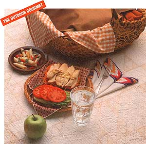

EATING OUT-OF-DOORS doesn't have to mean getting out of shape. This summer, pack your picnic basket healthfully. The lunch pictured on the next page is a pretty simple affair, but it's more nutritious than you might imagine. It goes a long way toward satisfying some of the daily requirements set forth in the U.S. government's latest word on nutrition-the National Academy of Science's National Research Council (NRC) report, Diet and Health.
Last year, the surgeon general echoed a broad scientific consensus: A good diet may help prevent or delay a host of diseases, including heart disease, high blood pressure, cancer and obesity. Now the NRC report gives us some user-friendly numbers to help us choose our food.
Every day, we should:
eat six or more servings of starches and other complex carbohydrates (breads, cereals, grains and legumes);
eat five or more servings of fruits and vegetables;
limit meat consumption to six ounces;
limit total salt intake to six grams or less;
reduce total fat intake to 30% or less of calories, and total cholesterol to less than 300 mg.
It's easier than it sounds to fit those foods into our daily fare. The simple box lunch described in this article provides 50% of the complex carbohydrates for the day, 60% of fruits/vegetables and 50% of the meat servings. Here's how:
Eat six or more servings of complex carbohydrates a day.
This meal provides three. Each slice of whole-grain bread is a serving, and a half cup of pasta salad (with a tablespoon of low-cal dressing) is the third.
Each of the following is one serving: a slice of bread, a roll or muffin, five crackers, a half cup of dry or cooked cereal, a half cup of legumes and a half cup of pasta.
The list is short but spacious, with room for abundant variety. Some whole-grain sandwich starters are 100% whole-wheat, raisin, rye or pumpernickel bread; whole-corn or whole-wheat tortillas; whole-wheat bagels, pitas or English muffins; rice cakes; corn bread; matzos; or crisp-bread.
Round out your daily allotment with a half cup of these other starchy choices: pasta, brown rice, black beans, black-eyed peas, broad beans, chick-peas (garbanzos), kidney beans, lentils, limas, pintos, soybeans or white beans. (Since legumes are also rich in protein, they can replace meat in meals, as well.)
Limit meat consumption to six ounces.
To cut down on fat and cholesterol, try filling sandwiches with more fish, poultry without the skin, lean meats and low-fat dairy products, like reduced-fat cheeses. Since most Americans eat far more protein than they need, limiting meat to six ounces a day is a healthy practice. Try water-packed tuna (easy on the mayo); egg salad (more whites than yolks); chicken or turkey breast (no skin); boiled lean ham; lean roast beef; low-fat cheese; lunch meats that are 95% to 98% fat-free ham, turkey or chicken (processed meats can be high in sodium, so check the label); peanut butter.
Eat five or more servings of fruits and vegetables.
This meal provides three servings. Nutritionists consider a half cup of a fruit or vegetable (raw or cooked) one serving; ditto a medium piece of fresh fruit.
So the half cup of grated carrots that adds crunch to the sandwich is actually a serving of vegetables, as is the half a tomato. Try adding a half cup of another veggie (sliced or grated) to your next sandwich: beets, cabbage, chard, cucumbers, green beans, mushrooms, peppers, radishes, spinach, tomatoes, turnips or zucchini.
Limit total salt intake to six grams or less.
Condiments add pizzazz to a sandwich-but often plenty of salt and fat to boot. Salt is only 40% sodium, so the NRC is actually recommending a maximum of 2.4 grams of sodium a day (2,400 mg). Each of these condiments has only a trace of fat, less than 45 calories per tablespoon, and the following milligrams of sodium: horseradish, 20; barbecue sauce, 125; Worcestershire, 150; steak sauce, 150; chunky taco sauce, 150; cocktail sauce, 160; ketchup, 180; mustard, 190; chili sauce, 210.
Drink eight glasses of water a day.
The NRC doesn't cite water, but nutritionists know it's crucial. An adult can live for weeks without food but only about 10 days without water. The average healthy man or woman needs about 2 1/2 to 3 quarts (10 to 12 cups) each day. We get much of that from the food we eat, especially fruits and vegetables. So aiming for eight glasses a day is a good goal.
The need is especially acute when you're exercising-running, hiking, gardening in the hot summer sun. Under these conditions, you can lose a quart of water an hour-up to 2010 of your body weight. Even moderate dehydration can reduce your performance and endurance and can slow blood circulation, making it harder for your body to cool off. The result can be hyperthermia-elevated body temperature. Cardiologist James Rippe of the University of Massachusetts Medical Center suggests that adults who exercise drink an eight-ounce glass of water 20 minutes beforehand, four ounces every 20 minutes, and another eight ounces afterwards. Or, if you can't remember all that, remember this: Drink more than you want. "If you rely on thirst to tell you how much to take in," Rippe cautions, "it can take you 24 hours to get back to normal."
As for what to drink, try water, mineral water, sugar-free seltzers (also salt-free, if possible), sparkling water and non-caffeinated herbal teas. Fruit juice is fine, but it has plenty of sugar and calories, so more than a couple of glasses can add to your daily calorie budget; whole fruits give you more nutrition per calorie. Skim milk is a good idea; everybody needs calcium. But beware of caffeinated coffee and tea. Caffeine robs your body of water.
Reduce total fat intake to 30% or less of calories and the intake of cholesterol to less than 300 mg.
It's now fundamental: No more than 30% of our calories should come from fat. Does that mean swearing off ice cream? No way. It means seeking a balance over a few days or a week. If you splurge on Tuesday, compensate on Wednesday. As a whole, our box lunch is a model of balance: 560 calories, 11 grams fat (17% of calories), 38 grams protein, 84 grams carbohydrate, 79 mg cholesterol, 700 mg sodium.
Remember that it's portable, and so are you. One of the joys of summer is the ease with which we can exercise our bodies. That's a goal the NRC was careful to emphasize: Balance food intake and physical activity to maintain appropriate body weight.
Mona Sue Boyd is a freelance
writer and a registered dietitian.
|
 |
|
|